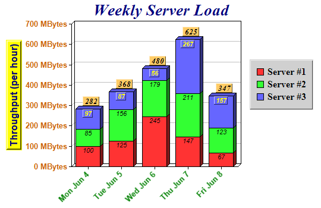

This example demonstrates controlling text style and colors in various text containing objects (chart and axis titles, axis labels, legend keys, data labels, etc).
The chart title, y-axis title, y-axis labels, x-axis labels, legend keys, and the data labels are configured with different fonts and colors, and have different background and 3D border effects. The y-axis labels are appended with "Mbytes" as the unit. The x-axis labels are rotated 45 degrees.
Note that since ChartDirector Ver 3.0, you may use
CDML to produce more sophisticated formatting effects than demonstrated in this example.
The following is the command line version of the code in "cppdemo/fontxy". The MFC version of the code is in "mfcdemo/mfcdemo". The Qt Widgets version of the code is in "qtdemo/qtdemo". The QML/Qt Quick version of the code is in "qmldemo/qmldemo".
#include "chartdir.h"
int main(int argc, char *argv[])
{
// The data for the chart
double data0[] = {100, 125, 245, 147, 67};
const int data0_size = (int)(sizeof(data0)/sizeof(*data0));
double data1[] = {85, 156, 179, 211, 123};
const int data1_size = (int)(sizeof(data1)/sizeof(*data1));
double data2[] = {97, 87, 56, 267, 157};
const int data2_size = (int)(sizeof(data2)/sizeof(*data2));
const char* labels[] = {"Mon Jun 4", "Tue Jun 5", "Wed Jun 6", "Thu Jun 7", "Fri Jun 8"};
const int labels_size = (int)(sizeof(labels)/sizeof(*labels));
// Create a XYChart object of size 540 x 350 pixels
XYChart* c = new XYChart(540, 350);
// Set the plot area to start at (120, 40) and of size 280 x 240 pixels
c->setPlotArea(120, 40, 280, 240);
// Add a title to the chart using 20pt Times Bold Italic font and using a deep blue color
// (0x000080)
c->addTitle("Weekly Server Load", "Times New Roman Bold Italic", 20, 0x000080);
// Add a legend box at (420, 100) (right of plot area) using 12pt Times Bold font. Sets the
// background of the legend box to light grey 0xd0d0d0 with a 1 pixel 3D border.
c->addLegend(420, 100, true, "Times New Roman Bold", 12)->setBackground(0xd0d0d0, 0xd0d0d0, 1);
// Add a title to the y-axis using 12pt Arial Bold/deep blue (0x000080) font. Set the background
// to yellow (0xffff00) with a 2 pixel 3D border.
c->yAxis()->setTitle("Throughput (per hour)", "Arial Bold", 12, 0x000080)->setBackground(
0xffff00, 0xffff00, 2);
// Use 10pt Arial Bold/orange (0xcc6600) font for the y axis labels
c->yAxis()->setLabelStyle("Arial Bold", 10, 0xcc6600);
// Set the axis label format to "nnn MBytes"
c->yAxis()->setLabelFormat("{value} MBytes");
// Use 10pt Arial Bold/green (0x008000) font for the x axis labels. Set the label angle to 45
// degrees.
c->xAxis()->setLabelStyle("Arial Bold", 10, 0x008000)->setFontAngle(45);
// Set the labels on the x axis.
c->xAxis()->setLabels(StringArray(labels, labels_size));
// Add a 3D stack bar layer with a 3D depth of 5 pixels
BarLayer* layer = c->addBarLayer(Chart::Stack, 5);
// Use Arial Italic as the default data label font in the bars
layer->setDataLabelStyle("Arial Italic");
// Use 10pt Times Bold Italic as the aggregate label font. Set the background to flesh
// (0xffcc66) color with a 1 pixel 3D border.
layer->setAggregateLabelStyle("Times New Roman Bold Italic", 10)->setBackground(0xffcc66,
Chart::Transparent, 1);
// Add the first data set to the stacked bar layer
layer->addDataSet(DoubleArray(data0, data0_size), -1, "Server #1");
// Add the second data set to the stacked bar layer
layer->addDataSet(DoubleArray(data1, data1_size), -1, "Server #2");
// Add the third data set to the stacked bar layer, and set its data label font to Arial Bold
// Italic.
TextBox* textbox = layer->addDataSet(DoubleArray(data2, data2_size), -1, "Server #3"
)->setDataLabelStyle("Arial Bold Italic");
// Set the data label font color for the third data set to yellow (0xffff00)
textbox->setFontColor(0xffff00);
// Set the data label background color to the same color as the bar segment, with a 1 pixel 3D
// border.
textbox->setBackground(Chart::SameAsMainColor, Chart::Transparent, 1);
// Output the chart
c->makeChart("fontxy.png");
//free up resources
delete c;
return 0;
}
© 2023 Advanced Software Engineering Limited. All rights reserved.